Welcome to the Anglerfish game!
Your goal is to guide the anglerfish back to their world trhough the wormhole in the center
Controls:
- W-A-S-D: Move the astronaut (be cautious, the movement is based on acceleration)
- Space (without the scout): spawn the scout and send on the mouse direction
- Space (with the scout): create a sound wave. Anglerfishes near the sound will go towards its direction. (use this to guide them)
Click anywhere to start!
Score: 0
 
